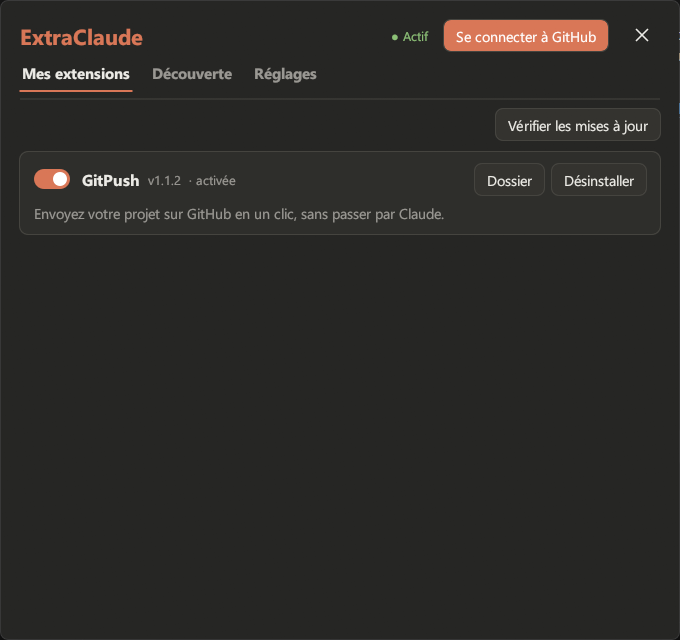

ExtraClaude
Ajoutez des extensions (mods, add-ons) à l'application Claude desktop sur Windows.
Télécharger ExtraClaude Code source sur GitHub

Ce que fait ExtraClaude
ExtraClaude installe, active et met à jour des extensions pour Claude desktop. Elles ajoutent des boutons, des fenêtres et des fonctions à l'application Claude elle-même, et réagissent à ce que fait Claude Code. Ce ne sont pas des serveurs MCP.
GitPush : envoyez votre projet sur GitHub en un clic, sans passer par Claude.
Installer
- Téléchargez
ExtraClaude.exedans la dernière version. - Lancez-le, choisissez où l'installer, puis cliquez sur Installer.
- Ouvrez Claude : un bouton puzzle apparaît dans la barre latérale. Il ouvre ExtraClaude.
ExtraClaude se met à jour tout seul. Les extensions s'installent depuis son onglet Découverte.
In English
ExtraClaude is an unofficial add-on manager for the Claude desktop app on Windows. It installs, enables and updates extensions (mods) that add buttons, windows and features to Claude desktop, such as GitPush, which pushes your project to GitHub in one click. They are not MCP servers: they extend the Claude app itself and react to Claude Code events through hooks. Free and open source (MIT). The interface is in French.
Projet non officiel, sans lien avec Anthropic. Claude est une marque d'Anthropic.